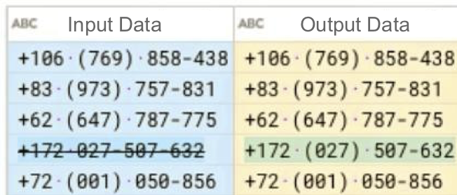
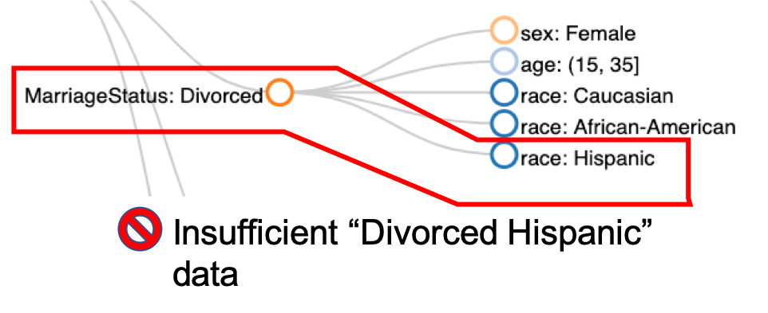
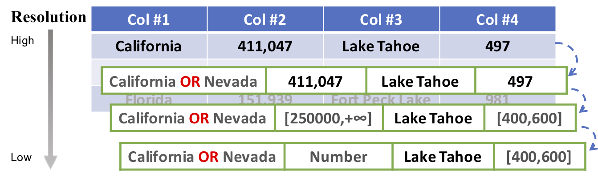
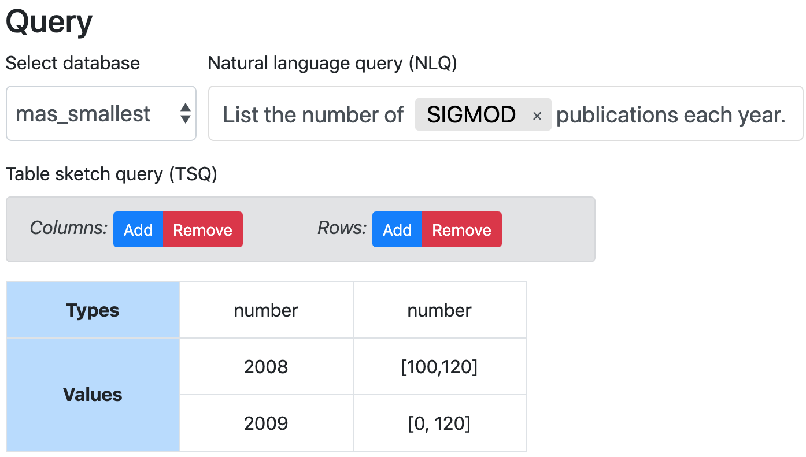

I am a PhD student in Database Research Group @ University of Michigan CSE co-advised by Prof. Mike Cafarella and Prof. H. V. Jagadish (jag). I am particularly interested in building interactive data preparation systems (like data cleaning, data integration, etc.) to improve productivity of data scientists/analysts, programmers and non-expert data users.
In Spring 2019, I interned in Microsoft Research DMX lab mented by Yeye He. In Summer 2017, I interned in Trifacta working on string data pattern normalization mentored by Sean Kandel, Mike Minar, and Prof. Joe Hellerstein. The work was integrated into Trifacta Cloud Wrangler launched in 08/2018.
I received B.S. degrees in computer science and mathematics from Purdue University. Before transfering to Purdue, I studied EE for two years in Tianjin University in China. Please check my CV for more details.
I am currently looking for an industrial research scientist, applied scientist or software engineering position starting in summer 2020. You are more than welcome to email me if I could be a good match for your team :)
Foofah
SIGMOD'17 · SIGMOD'17 Demo
Foofah performs data transformation/cleaning through programming by examples (PBE), which requires little domain knowledge from non-expert users. It efficiently discovers a sequence of parameterized data wrangling actions which guarantee to transform the raw data into the example form provided by the end user using a combinatorial search algorithm guided by the proposed distance metric customized for spreadsheets. The user interaction time is reduced by ~60% compared to the seminal Wrangler system. The system is open-sourced at https://github.com/umich-dbgroup/foofah/.

CLX (Click-label-and-transform; pronouced as "Clicks")
EDBT'19
Designed and implemented CLX, an interactive data cleaning system. CLX 1) automatically identifies regular-expression-like data patterns for a given set of string data with heterogeneous data patterns for non-expert users to understand, and 2) suggests pattern-based transformation programs to unify various data patterns. The work was integrated to Trifacta Cloud Wrangler as a main feature in Aug 2018 and available at https://cloud.trifacta.com/.

MithraCoverage
ICDE'19 · SIGMOD'20 Demo
The system efficiently discovers under-represented/under-covered intersectional subgroups in a given dataset (e.g., a medical dataset may lack data records from a subgroup of "Hispanic women"), which may cause the problem of population bias. MithraCoverage also suggests a ranked list of subgroups in which the user could collect more data entries to remedy the above issue and ensure data fairness.

PRISM
HILDA@SIGMOD'18 · CIDR'19
The system infers SQL queries using imprecise and/or incomplete user examples from the target table the user desires from a relational database. The query discovery uses a bottom-up search-based algorithm and a filter-based validation process driven by a Bayesian network which reduces the overall number of query executions on the source database by ~70%.

DuoQuest
CIDR'20, CAST@VLDB 2019
Duoquest is a dual-specification query synthesis system, which consumes both a Natural Language Query and an optional PBE-like table sketch query that enables users to express varied levels of knowledge about the desired SQL and schema.

DeepWrangler (ongoing)
Leverageing deep learning in data transformation and extraction.
- 2020
-
MithraCoverage: A System for Investigating Population Bias for Intersectional Fairness
Zhongjun Jin, Mengjing Xu, Chenkai Sun, Abolfazl Asudeh, H. V. Jagadish
SIGMOD 2020 Demo
[pdf]
-
Constructing Expressive Relational Queries with Dual-Specification Synthesis
Christopher Baik, Zhongjun Jin, Michael Cafarella, H. V. Jagadish
CIDR 2020
[pdf]
- 2019
-
Disambiguating Queries in Conversational Interfaces
Christopher Baik, Zhongjun Jin, Michael Cafarella
CAST @ VLDB 2019
[pdf]
-
Assessing and Remedying Coverage for a Given Dataset
Abolfazl Asudeh, Zhongjun Jin, H. V. Jagadish
ICDE 2019
[pdf]
-
CLX: Towards verifiable PBE data transformation
Zhongjun Jin, Michael Cafarella, H. V. Jagadish, Sean Kandel, Michael Minar, Joseph M. Hellerstein
EDBT 2019
[pdf] [commercial release 1, 2]
-
Demonstration of a Multiresolution Schema Mapping System
Zhongjun Jin, Christopher Baik, Michael Cafarella, H. V. Jagadish, Yuze Lou
CIDR 2019
[pdf]
- 2018
-
Beaver: Towards a Declarative Schema Mapping
Zhongjun Jin, Christopher Baik, Michael Cafarella, H. V. Jagadish
HILDA @ SIGMOD 2018
[pdf] [slides]
- 2017
-
Foofah: Transforming Data By Example
Zhongjun Jin, Michael R. Anderson, Michael Cafarella, H. V. Jagadish
SIGMOD 2017
[pdf] [poster] [slides] [code] [ReproZip] (Readme) [data] [press]
-
Foofah: A Programming-By-Example System for Synthesizing Data Transformation Programs
Zhongjun Jin, Michael R. Anderson, Michael Cafarella, H. V. Jagadish
SIGMOD 2017 Demo (selected as "Best of" Demos)
[pdf] [video]
- 2016 and before
- Privacy Preserving Access Control in Service-Oriented Architecture
Rohit Ranchal, Bharat Bhargava, Ruchith Fernando, Hui Lei, Zhongjun Jin
ICWS 2016
- A Self-Cloning Agents Based Model for High-Performance Mobile-Cloud Computing
Pelin Angin, Bharat Bhargava, Zhongjun Jin
CLOUD 2015